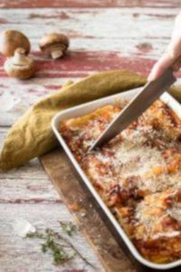

Lasanha
Ingredientes
- 1 kg de carne moída
- 250 g de massa de lasanha
pronta pré-cozida - 400 g de molho de tomate pronto
- 350 g de queijo mussarela
- 300 g de presunto
- 1 cebola grande picada
- 4 dentes de alho picados
- Sal à gosto
- 2 sachês de Sazon de carne
- Óleo (4 ou 5 colheres de sopa)
Modo de preparo
refogue a cebola e o alho.
coloque uma camada de massa uma camada de
carne novamente uma camada de presunto uma
camada de queijo mussarela uma de carne e
assim por diante até terminar com uma camada
de queijo ou de carne.
forno por mais ou menos uns vinte e cinco
minutos.
já está mole.
Panquecas
Ingredientes
- 1 xícara e 1/2 de chá de farinha de trigo
- 1 xícara e 1/2 de leite
- 1 banana nanica bem madura
- 2 colheres de sobremesa
de fermento em pó Royal - 1 colher rasa de café de sal
- 1 colher de café de essência de baunilha
- 2 ovos levemente batidos
(para não criar espuma) - Óleo para untar
- 2 colheres de sobremesa de açúcar cristal
- 2 colheres de sopa de manteiga
Modo de preparo
ingredientes secos.
bata o leite e a banana nanica e reserve.
os ovos para que não espumem e reserve.
micro-ondas por aproximadamente
30 segundos.
batidos e a manteiga derretida, misture bem.
incluindo a essência de baunilha reserve por
5 minutos.
antiaderente, coloque algumas gotas de óleo
e leve ao fogo baixo para aquecer.
concha.
primeiro lado e 1 minuto e meio no segundo
lado Retire e reserve
Torta de limão

Ingredientes
- 395 g de leite condensado
- 200 g de creme de leite
- 1/2 copo de suco de limão taiti
- 135 g de chocolate branco
- 200 g de creme de leite
Primeiro Creme:
Segundo Creme:
Modo de preparo
Primeiro Creme:
creme de leite e o suco de limão por 1 minuto.
Segundo Creme:
30 em 30 segundos até derreter.
caixinha de creme de leite e mexa bem
novamente.
creme.
na geladeira por mais ou menos 5 horas, e
depois sirva!
Torta de Maçã

Ingredientes
- 1 caixa de creme de leite
- 1 lata de leite condensado
- 1 lata (a mesma medida do
leite condensado) de leite - 3 colheres de amido de milho
- 6 maçãs sem casca cortadas
em fatias pequenas - 8 colheres de açúcar
- 1 gema de ovo
Creme:
Cobertura:
Modo de preparo
Creme:
Cobertura:
adicione 4 colheres de açúcar e leve ao fogo
por aproximadamente 10 minutos.
no cozimento).
Montagem:
forma própria para torta, podes usar forma
de fundo falso).
(uma camada de cerda de 6 mm).
e canela a gosto.
sobre a torta. Bata uma gema com uma colher de
chá de açúcar e pincele sobre os fios de massa.
Leve ao forno por 30 minutos.